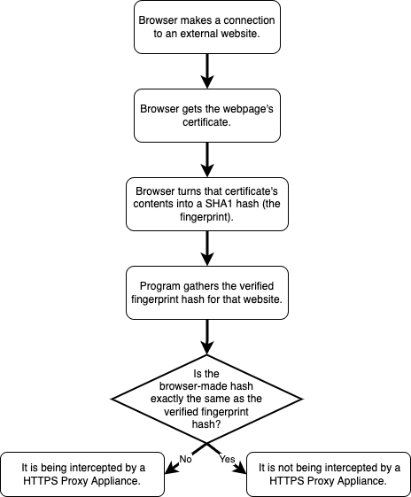

Fingerprints
What are the two primary purposes of a secure, HTTPS connection?
1. To encrypt all data sent back and forth between the browser and server.
2. To protect the internet from a website being able to be hijacked.
What is an HTTPS Proxy Appliance?
An HTTPS Proxy Appliance is a device that circumvents the guarantee of internet privacy and security. They add a Psuedo Ceritificate Authority to their users browsers / computers. Anytime a user connects to a website with that certificate, the connection is intercepted by the Proxy Appliance and tracked before it leaves the building.
What is MITM? What risks does this present?
A MITM is a man in the middle attack. This is when an external force scans your network traffic before it is sent to a server. The attacker can also redirect your request to a different server. This presents multiple risks because when you visit google.com, you might not actually be going to google.com, or the data you send to the search engine might be looked at by others.
What is a hash? What are the essential qualities that make a hash a "good" hash?
A hash is a complex mathematical algorith that use every bit if information given to create a seemingly random output. It is near impossible to predict the output of a hash which makes it secure. A "good" hash changes the output dramatically even with a small change in input and is extremely hard to crack.
What is a CA? What role do they play?
A CA is a Certificate Authority. It is how websites verify their identity in the real world. The CA then signs the security certificate with the website. The CA is expected to have done extensive testing to make sure the website is who they say they are.
How can SSL interception be prevented?
SSL interception cannot be prevented, but it can be detected. The connection will always be made to the Proxy Appliance if a request is made on a network containing one however the certificiate given back to the user will always be fraudulent.
How can SSL interception be detected?
SSL interception can be detected by comparing the security certificate given back to the browser to the saved list the browser has.
What is a false-positive? What is a false-negative?
A false-positive is a general term meaning an output of a test was positive, but it was really negative. A false-negative means the output was negative, but it was actually positive. In this context, it is when a certificate is invalid, but it is actually from the wanted website. This happens with larger websites sometimes because they have multiple servers.
Does your school / government / ISP have a right to eavesdrop on your communications?
I see both sides to this argument. As an internet user, I feel I shoud have the right to my privacy, however, I also see the need for intercepting communications between criminals. Schools are often required to monitor and block certain traffic with government laws, but it is also sometimes used to spy on the students unnecessarily. I feel like it is often abused more than it is used for legitimate means, but I doubt it will ever change. The most we can do is make it harder for them to track our movements with things like VPNs.
A detailed flowchart describing an algorithm to compare authentic fingerprints with another retrieved from a browser:
Gibson, S., & CORPORATION, G. R. (n.d.). Grc | SSL tls HTTPS web server certificate fingerprints. Home of Gibson Research Corporation. https://www.grc.com/fingerprints.htm
Man-in-the-middle attack (MitM) - Glossary | CSRC. (n.d.). NIST Computer Security Resource Center | CSRC. https://csrc.nist.gov/glossary/term/man_in_the_middle_attack